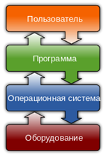
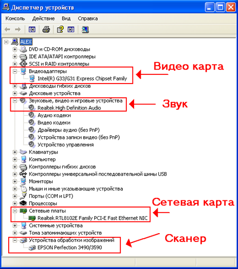
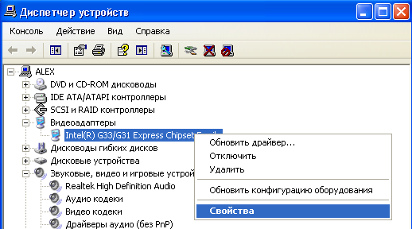
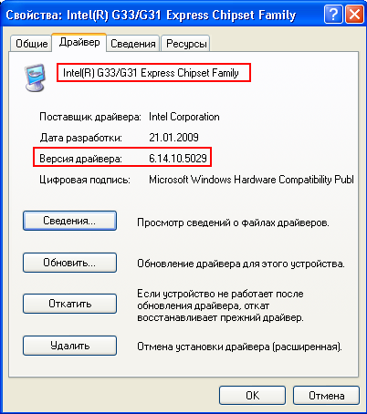

KOMPYUTERNING APPARAT VOSITALARIGA BOG‘LASH DASTURLARI. DASTURIY YECHIMLAR.
Ishdan maqsad. Kompyuterning apparat vositalarini o’rganish va apparat vositalariga bog’lash dasturlarini tahlil qilish. Ularning dasturiy yechimlarini ishlab chiqish.
Nazariy qism
Driver (Ingliz tili - haydovchi, ko'plik haydovchilar) - boshqa dasturlar (operatsion tizimi) imkonini beradi kompyuter dasturiy ta'minot bir qurilmaning apparat ruxsat bor. Mumkin bo'lmagan asosiy apparat qismlariga uchun mavjud Driverlarga odatda tizim ishlamaydi. Biroq, ayrim qurilmalar uchun maxsus Driverlar talab qilishi mumkin masalan, bir video karta yoki printer kabi, odatda, bu dasturlar qurilma ishlab chiqaruvchi tomonidan taqdim etiladi. Umuman, driver apparat qurilmalar bilan ta'sir o'tkazish uchun talab qilinmaydi (masalan, / dev / nol) Unix uchun nazorat qurilma bilan bog'liq bo'lmagan dasturiy ta'minot xizmatlarni taqdim qilish mumkin, (masalan, bir faylga dasturi chiqish yozadi bir printerning Driverini).
Operatsion tizim standart komanda majmuasini tushunadigan ba'zi "virtual qurilmani" boshqaradi. Driver bu buyruqlarni qurilma to'g'ridan-to'g'ri tushunadigan komandalarga aylantiradi. Ushbu mafkura "apparatdan abstraction" deb ataladi. Mahalliy kompyuter texnologiyasida ilk marotaba AK telekanallarida shunday yondashuv paydo bo'ldi va ushbu turdagi nazorat dasturlariga kanalli dastur deb nom berildi. Driver ma'lum operatsion tizim voqealarini boshqaradigan bir necha funktsiyalardan iborat. Odatda bu 5 ta asosiy hodisadir:
Driyverni joylashtirish. Bu erda haydovchi tizimda ro'yxatga olinadi, dastlabki ishga tushiradi va hokazo.
Yuklash. Chalg'igan olingan resurslarni - xotira, fayllar, qurilmalar va boshqalarni ozod qiladi.
Driverni ochish. Asosiy ishning boshlanishi. Odatda haydovchi dastur tomonidan fayl sifatida, Win32 yoki fopen () da UNIX-kabi tizimlarda CreateFile () funktsiyalari orqali ochiladi.
O'qish / Yozish: dastur haydovchiga xizmat ko'rsatadigan qurilmani o'qiydi yoki yozadi.
Yakunlovchi: Ochilishning teskarisi bo'lgan operatsiya ochilganda ochiq bo'lgan resurslarni chiqaradi va fayl identifikatorini yo'q qiladi.
IO nazorati, IOCTL. Ko'pincha, driver qurilma uchun maxsus I / U interfeysini qo'llab-quvvatlaydi. Ushbu interfeysdan foydalanib, dastur ushbu qurilma tomonidan qo'llab-quvvatlangan maxsus buyruq yuborishi mumkin. Masalan, SCSI qurilmalari uchun qurilmaning ta'rifini olish uchun GET_INQUIRY buyrug'ini yuborishingiz mumkin. Win32-tizimlarida nazorat qilish DeviceIoControl () funktsiyasi orqali, UNIX-da - ioctl () yordamida amalga oshiriladi. Kompyuterning asosiy elementlari emas, balki butun kompyuter qurilmalarining ko'pchiligini birlashtiradigan tizimlar rivojlanib borayotganligi sababli, "apparat platformasi" yoki oddiy "platforma" deb nomlangan bunday tizimlarni qo'llab-quvvatlash qulayligi paydo bo'ldi.
Platformalar sotuvchilari operatsion tizimlar uchun bir nechta driverlarni etkazib berishdi, ular bir vositaga (odatda CD-ROM) o'rnatildi, keyin Four-in-One va One Touch deb nomlangan o'rnatish paketlari mavjud bo'lib, unda Driverlarni tizimga o'rnatish osonlashdi. Bunday holatda, odatda, barcha Driverlarni to'liq avtomatik o'rnatish yoki qo'lda zarur bo'lganlarni tanlashingiz mumkin. Biroq, bitta, yaxshi belgilangan muddat uzoq emas edi. Zamonaviy atama bu kabi qurilma Driverlarini tavsiflaydigan boshqaruvni qo'llab-quvvatlash to'plami (yoki "platforma yordami to'plami"). Haqiqiy driverlarga qo'shimcha ravishda, boshqa o'rnatish paketlari kabi, operatsion tizim va dastur modullari ham bo'lishi mumkin.
Driver kompyuter va tashqi qurilma o'rtasidagi aloqadir. Chalg'igan operatsion tizim qurilmaning apparatiga kirishini ta'minlaydigan va undan keyin uni boshqarish qobiliyatiga ega bo'lgan kompyuter dasturi.

1-rasm: Driverning vazifalari
Driver barcha tashqi va ichki kompyuter qurilmalari uchun talab qilinadi. Video karta, ovoz kartasi, printer, skaner va hk. Masalan, biz skanerni sotib oldik, uni shaxsiy kompyuterga uldik, ekranning pastki chap burchagida shunday qurilma aniqlangan va hatto ishlab chiqaruvchi aniqlangan xabar ko'rinadi. Lekin, masalan, eski fotosuratlarni skanerlashdan avval, hech narsa sodir bo'lmaydi. Kompyuter bu brauzer bilan qanday ishlashni bilmaydi. Bu yerda ushbu brauzerning Driveri keltirilgan. Tizimda hech qanday ovoz Driveri bo'lmasa, siz musiqa tinglay olmaysiz. Video bilan bir xil bo'lsa, ekran o'lchamlari o'yinlarni o'ynash uchun tuzilgan bo'lishi mumkin emas. Driverlarning bir qismi allaqachon Windowsda mavjud. Oddiy veb-kameralar uchun hatto driverga kerak bo'lmasa ham, klaviatura Driverini, sichqonchani maxsus o'rnatishga hojat yo'q. Agar multimediya uchun tugmachali tugmachalar yoki qo'shimcha tugmachalar bilan klaviatura o'rnatilgan bir sichqonchani bo'lsa, qo'shimcha o'tin bo'lmasdan amalga oshirish mumkin emas.
Driverlarning saqlanish joyi
Windowsda qurilma Driverlari C: WINDOWS\SYSTM32 katalogida saqlanadi. Driver fayllari quyidagi kengaytmalarga ega bo'lishi mumkin: * .vxt, * .drv, * .sys, * .dll, * * .inf - fayl o'rnatish haqida ma'lumotni o'z ichiga oladi. Odatda, qoida sifatida, disk har doim qurilmaga ulanadi, unda barcha kerakli driver mavjud. Anakartni sotib olayotganda kerakli fayllar majmuasi bo'lgan disk doimo biriktiriladi. Xuddi shu narsa video va tovush kartalari uchun ham qo'llaniladi, agar ular alohida sotib olinsa. Ovoz kartasi uchun esa, agar u matga o'rnatilsa. diskka diskda kerakli Driver bor va agar karta alohida o'rnatilgan bo'lsa, disk alohida bo'lishi kerak.
Yuklab olish uchun, avvalo, qurilma haqida barcha kerakli ma'lumotlarni bilib olishingiz kerak. Buni, masalan, GPU-Z dasturi yordamida amalga oshirishingiz mumkin (bu video karta bilan bo'ladi). Yana bir foydali narsa - "Speccy" dasturi, u anakart haqida va Vidyax haqida ham ma'lumot topishga yordam beradi.

2-rasm: Driverlarning saqlanish joylari.

3-rasm: Videokarta driver haqida ma’mumot olish

4-rasm: Video karta driver haqida ma’lumot olish
Driverlarni o’rnatish
Diskni joylashtiramiz, avtomatik ishga tushgandan so'ng, o'rnatishni o'rnatib, oynani yopamiz va allaqachon tanish qurilmalar boshqaruvchisiga o'tamiz. Sariq savol belgisi bo'lgan noma'lum qurilma paydo bo'lishi kerak. Keyin sichqonchaning o'ng tugmasi bilan ushbu qurilmani bosib, Driverni yangilashni tanlang, va u erda siz avtomatik qidiruv tizimini tanlashingiz mumkin, uni diskda topasiz. Umuman olganda, men bir joyda o'qidimki, barcha o'tinlarni shu tarzda o'rnatish kerak. Bu qanchalik to'g'ri ekanini bilmayman. Ammo shunga o'xshab, brauzerni kompyuterga moslashtirdim. Driverlar - bu kompyuterning dasturiy kompleksining ajralmas qismidir, lekin ular bilan bir qatorda muammolar mavjud. Driverlar ziddiyatga olib kelishi mumkin. natijalari: Moviy ekranlar, qurilma ishlamayapti. Har ikki holatda ham, qayta tiklashingiz, qurilma Driverini yangilashingiz yoki yuqoridagi ekran tasvirini ko'rib turganingizdek, yangilanish yangilanganidan keyin boshlangan muammolar tugmachani o'chirib qo'yishingiz kerak. Odatda, ko'k ekranlar o'tin vidyahi bilan bog'liq muammolar tufayli paydo bo'ladi. Keyingi yangilanish muammoni hal qiladi.
Topshiriq:
Amaliy ishning ketma-ketligi bilan tanishing;
Amaliy ish bo'yicha tahlil o‘tkazing va hisobot tayyorlang.
Test savollariga tayyorlaning.
Kompyuterning apparat vositalarini o’rganish va apparat vositalariga bog’lash dasturlarini tahlil qiling.
Nazorat savollari:
Kompyuter driverlari nima?
Kompyuter driverlarining asosiy vazifasi nimadan iborat?
Virtual kompyuter driverlari nima?